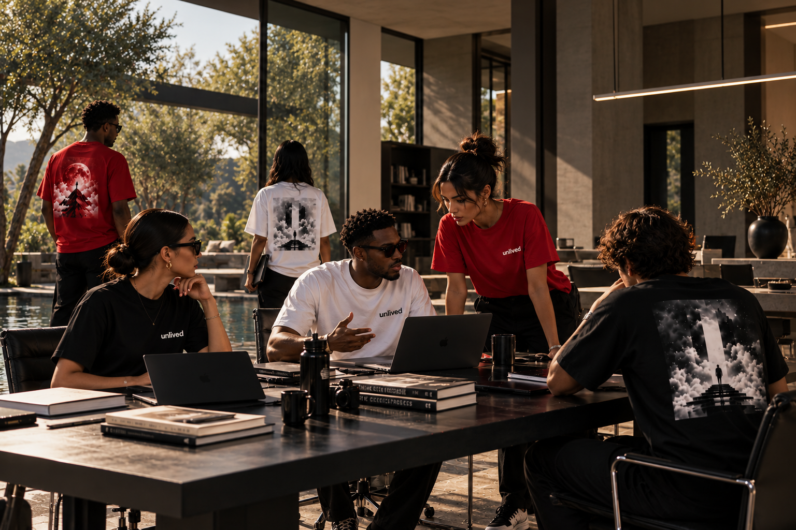
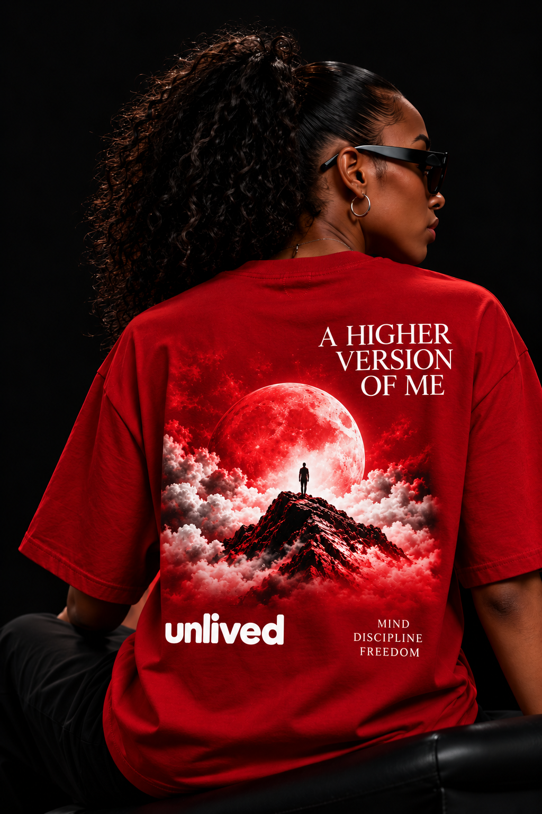
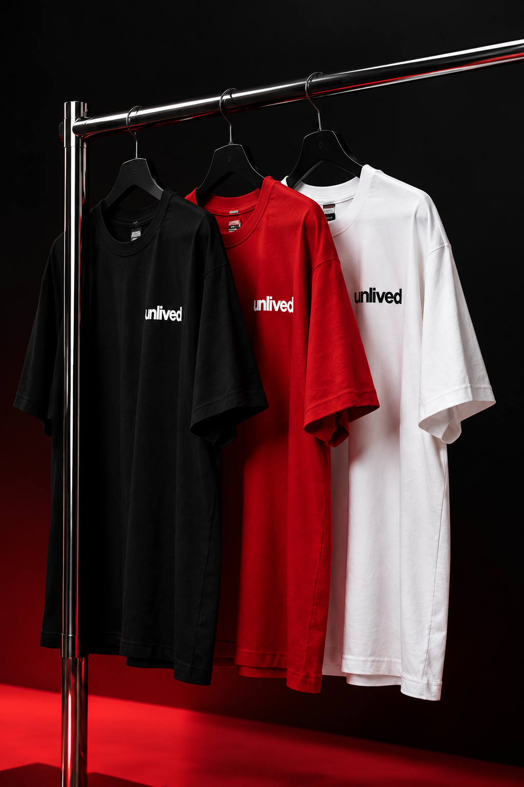

L’ESSENTIEL / ACTE I
L’ESSENTIEL / ACTE IL’essentiel blanc.
Choisir cette pièce
ACTE I: DAY ONE · LA PREMIÈRE ÉDITION
Cette idée qui revient. Ce projet que tu gardes pour plus tard. UNLIVED habille le moment où tu lui fais enfin une place.
Inscription gratuite · Sans achat ni engagement
Tu connais cette envie qui revient, même quand tout semble à sa place.
Le premier pas n’attend pas la fin du doute. DAY ONE porte le souvenir du moment où tu décides d’avancer avec lui.
Découvrir les trois t-shirtsACTE I: DAY ONE · PREMIÈRE ÉDITION
L’ESSENTIEL / ACTE IL’essentiel blanc.
Choisir cette pièce SIGNATURE / 02 FORMATIONS
SIGNATURE / 02 FORMATIONSLa pièce signature.
Choisir cette pièce L’ESSENTIEL / ACTE I
L’ESSENTIEL / ACTE IL’essentiel noir.
Choisir cette pièceACTE I: DAY ONE arrive bientôt.
Choisis le rappel qui t’accompagnera au premier pas.

LE DÉCLIC · LE DÉTAIL DU DOSLE ROUGE / LA PIÈCE SIGNATURE
Tu as déjà imaginé la suite. Peut-être même assez pour en connaître les détails. Le rouge marque cet instant où tu lui donnes enfin une place dans ta vie.
Un t-shirt. Et des outils pour ce qui vient après le déclic. Pas une promesse de devenir quelqu’un d’autre : une invitation à faire ce premier geste qui t’appartient.
Inscription gratuite. Le prix sera communiqué avant toute commande.
Découvrir LE DÉCLICAVEC LE ROUGE / DEUX FORMATIONS ENVISAGÉES
Deux programmes en préparation, pensés pour être inclus avec la pièce rouge. Contenu, format et modalités d’accès seront confirmés avant toute vente.
Nommer ce que tu repousses. Choisir une action à ta portée. La faire, avec la peur qui est là.
AXE ENVISAGÉ · PASSER À L’ACTIONFaire de la place dans tes journées. Reprendre après un arrêt. Construire un rythme qui t’appartient.
AXE ENVISAGÉ · AUTONOMIE & CONTINUITÉLe courage n’attend pas que le doute disparaisse. Il prend forme dans le choix que tu fais maintenant, même petit.
Lire notre histoire
TA PRÉSENCE. TES RÈGLES.UNE MARQUE QUI AVANCE, CHAPITRE APRÈS CHAPITRE.
Blanc. Noir. Rouge signature.
Le prochain chapitre.
La suite prendra son temps.
LE PREMIER CHAPITRE S’ÉCRIT.